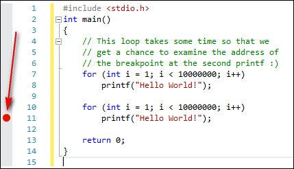
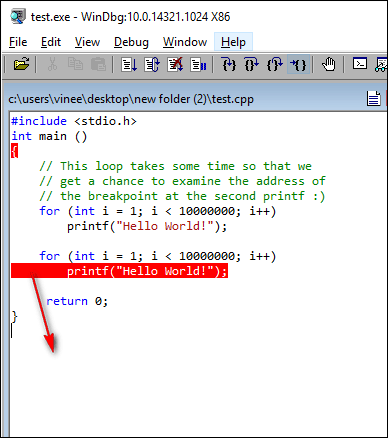
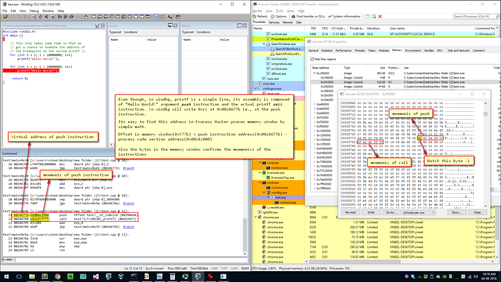
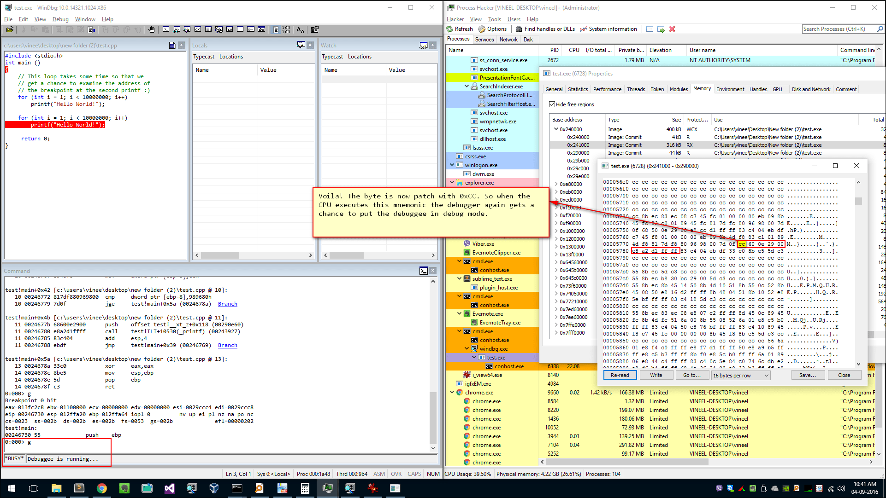
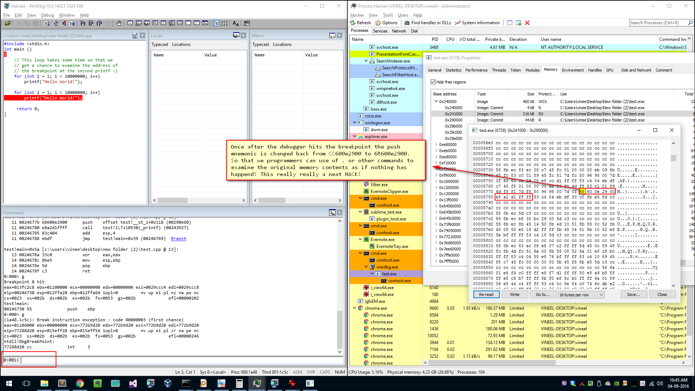

Introduction
It’s been a while, I have got a chance to blog about low-level stuff. In this article, I am going to explain how breakpoints work in debuggers. I am assuming the reader is already familiar with what a breakpoint is? and how to set it in your debugger of choice. The goal of this post is to explain the interplay between Debugger, Debuggee, Operating System and the CPU.
Breakpoints Theory
To get there, we have to ask ourselves What does it mean by debugging a program/process?. To keep it simple, It’s the controlled execution of a program by other program. The devil is in the word controlled. Whenever you open a debugger and launch a program or attach to a running process, the OS and the CPU guarantees that any event (like dll loading or interrupts or exceptions etc) happening on behalf of debuggee process are notified to debugger process for it to take necessary action. The important thing to understand here is, it’s the execution of debuggee which is causing the debugger to take actions on behalf of it, not the other way around. So there should be something in the debuggee’s code that should cause CPU to do the heavy lifting. This is where CPU’s breakpoint instruction comes in. Every x86/amd64 CPU provides a special instruction called breakpoint instruction Int 3 whose mnemonic is 0xCC. When a piece of code executes this instruction, the CPU triggers a breakpoint interrupt and notifies it to OS and asks it what needs to be done next. Now this event from OS gets propagated to debugger by pausing all the threads in the debuggee. Now it’s up to debugger to handle it according to its will.
So far so good, But one question that should bother you at this point is The programmer never inserted 0xCC instruction in his program when he is writing the code. Then who puts it in? It’s the debugger that puts this 0xCC instruction in the debuggee processing using WriteProcessMemory Win32 Api in Windows. Let’s see more closely how it is done. Generally, at any given point in time, a debuggee will be in running or debugging mode. In running mode, debugger has no control of the debuggee until debuggee hits the above said breakpoint instruction. In debug mode, it has full control of the debuggee execution, ie.., it can single step each line of the code, examine call stack/registers etc. This is exactly the mode in which you can also set additional breakpoints by hitting F9 or ‘bp’ or equivalent. So when you ask the debugger to put a breakpoint on the current line/instruction, the debugger makes a note of the location/address of the instruction and it simply gives us below visual feedback but no change is made to debuggee


After this, when you jump from debug mode to running mode by hitting the go command either via F5 in Visual Studio or ‘g’ command in Windbg/gdb, the debugger patches the first byte of all addresses at which we asked the debugger to set the breakpoints with 0xCC and let the debuggee run. This is in a way, the preparation done by debugger to make sure it gets notified back when CPU control reaches the user set breakpoint. Neat hack! In a similar way, once the breakpoint is hit, just before putting the debuggee in debug mode, It will update all the addresses back with their original content/byte. That is the reason why we don’t see this 0xCC instruction when in debug mode, also this is exactly what we expect because we don’t want our instructions garbled by the debugger with random 0xCC instructions when we want to examine. Now fasten your seat belts and let’s see all of this in action!
Breakpoints Practice
Let’s consider the above program and see what happens when we set the breakpoint on the main and second printf lines in WinDbg. Once we set the breakpoints WinDbg only makes a note of these line addresses. Now when we hit ‘g’ WinDbg moves the debuggee to running mode. Let’s verify this whether debugger has patched the printf line with 0xcc before moving to running mode. Unfortunately, we cannot dump the main function because the program is already in run mode! i.e., we cannot use commands like ‘uf .’ to see whether the bytes are patched by Windbg. But fortunately, Process Hacker can help us in peering in the binary at the printf address when the program is running. The below screenshot shows the contents of main function at printf line before hitting go command. So as expected no change at the push mnemonic before call instruction (just windbg kept a note of the breakpoints).
#include <stdio.h>
int main () {
// This loop takes some time so that we
// get a chance to examine the address of
// the breakpoint at the second printf :)
for (int i = 1; i < 100000000; i++)
printf("Hello World!");
for (int i = 1; i < 10000000; i++)
printf("Hello World!");
return 0;
}


After the initial for loop is done executing and just before hitting the second printf the CPU executes the patched 0xCC instead of original 68600e2900 so this causes the breakpoint interrupt from CPU to OS and OS notifies this to debugger to put the debuggee in debug mode. Now debugger does the opposite of restoring the mnemonics from CC600e2900 to 68600e2900 so that the programmer can examine the content of the function as if nothing has happened before! Pretty neat HACK!

I am stopping here and let this content sink in your brain. There’s more to it, for example, when the program is running and we want to forcefully break in by hitting toolbar break button or ctrl+break etc then debuggers in Windows uses CreateRemoteThread Win32 API to create a new remote thread in the debuggee and calls the ntdll!DbgBreakPoint.